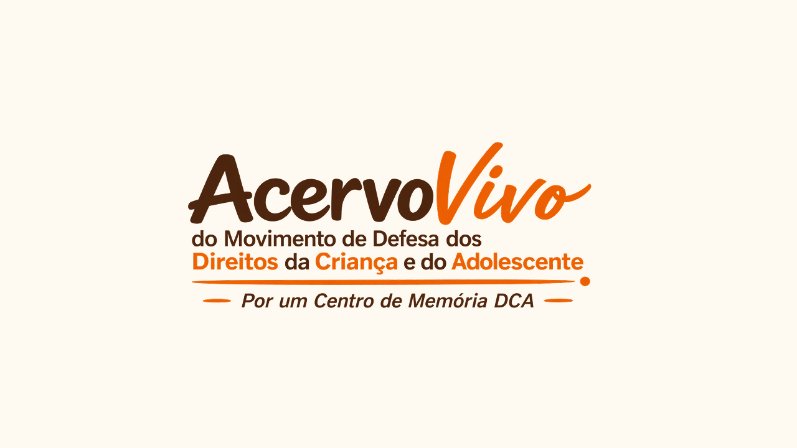

Plataforma digital, Coordenação, Cultura

Plataforma Acervo Vivo
Sobre o projeto
Coordenação da criação e organização do site Acervo Vivo, atuando na estruturação do conteúdo, no acompanhamento da produção visual e no alinhamento das entregas para preservar a memória do projeto com clareza e identidade.